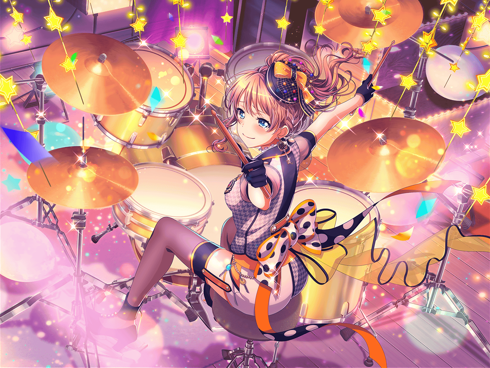

商店街
まりな
あ、沙綾ちゃん、こんにちは！
沙綾
まりなさん、{{userName}}さん！
どうもこんにちは
沙綾
今日は、お店の手伝いをしてるんですけど、
よかったら、ちょっと寄っていってくれませんか？
沙綾
この前のお礼もしたいですし
まりな
お礼？
沙綾
この前のクライブの時、いろいろ機材とか貸してもらって
本当にお世話になったんで、そのお礼がしたいんです
沙綾
CiRCLEの機材がなかったら、この前のライブは
成功しませんでしたから
まりな
それは違うって。
ライブが成功したのはポピパのみんなが
頑張ったからだよ
まりな
私達はただ機材を貸しただけ。
もっと自分達に自信を持ったほうがいいよ。
キミもそう思うよね？
沙綾
ありがとうございます、
{{userName}}さん
まりな
なんかホントにすっごい良いライブだったって、
みんな言ってたよ。
私達も観に行きたかったなー
まりな
確か、キミも行きたかったって言ってたよね？
沙綾
ふふ。
次やる時は、ぜひお二人もご招待しますね
沙綾
有咲は、もうクライブはしないって言ってましたけど、
有咲だってかなり楽しんでたから、
またそのうちできる気がするんで
まりな
ホントに！？
楽しみにしてるね！
沙綾
はい！ 期待しててくださいね！
……けど、この前のことあって、私すっごい思ったんです。
みんなポピパが大好きなんだなって
沙綾
途中はいろんなことがありましたけど、
結果的にまとまれたのって、みんながポピパのことを思って、
それぞれがそれにちゃんと向き合ったからだと思うんです
沙綾
りみりんは自分の作った曲、おたえはライブでの演奏、
そして有咲は自分自身としっかり向き合ったんだと思います
沙綾
なんか、そんなみんなを見てたら
すっごいカッコイイなって思っちゃいました
まりな
なるほどね……
香澄ちゃんと沙綾ちゃんは何に向き合ったの？
沙綾
香澄はとにかく、私達……『ポピパ』というもの自体と
向き合っていたんだと思います。
で、私は……
沙綾
私はたぶん、自分の今までのことと
向き合えたのかなって思います
沙綾
……はい、今までは、CHiSPAのこととか、
あんまりみんなの前では話せなかったけど、
今回は、すごく自然に話せました
沙綾
あの時の話が自然にできたのも嬉しかったし、
それにあの時の経験が活きたような気がして、
それが本当に嬉しかったですね
沙綾
ポピパがバラバラになりかけた時、
香澄だけに頼らないで、私も逃げずに向き合って
良かったなって、今では心から思ってます
まりな
なんか……
そんなことを言える沙綾ちゃんって、
すっごいカッコイイね
沙綾
え？
そ、そんな、カッコイイだなんて……
まりな
ううん、ホントに。
バンドとともに成長してるっていうのかな？
そんな貴重な経験ができて、ホントに羨ましいよ
沙綾
あ、ありがとうございます！
あの、本当にお店に寄っていってください！
父が新しいパンに挑戦してるんで、味見だけでも、ぜひ！
まりな
それじゃあ、ちょっとだけ寄らせてもらおうかな……
沙綾
まりなさん、{{userName}}さん！
はい、それじゃあ一緒に行きましょう！